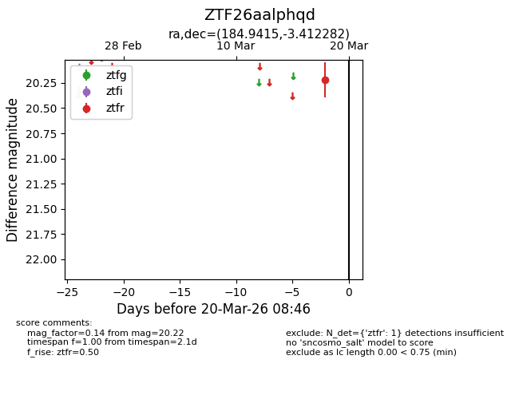
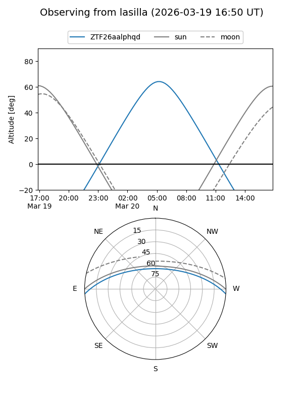
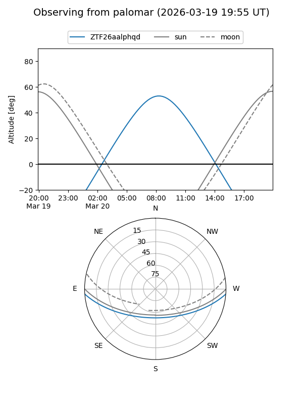

ZTF26aalphqd
Target ZTF26aalphqd at 2026-03-20 08:48
Aliases and brokers:
FINK: link
Lasair: link
ALeRCE: link
alt names
ZTF26aalphqd (ztf,fink_ztf)
Coordinates:
equatorial (ra, dec) = 184.9415,-3.41228
equatorial (HMS+DMS) = 12:19:45.96,-03:24:44.21
galactic (l, b) = (287.6653,+58.51753)
Flags:
Photometry:
last ztfr=20.22
1 ztfr detections
Lightcurve

Visibility


Additional plots